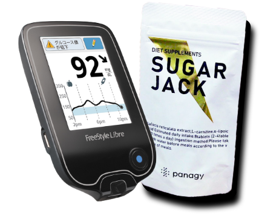

銀座ソラリアとは
5000名を超える⽅々に独⾃の修復・再⽣治療で、⾒た⽬を
はじめに、細胞レベルで「若く」を実感していただいております。
バイオセンサーを⽤いて個々の「太る・痩せない・痩せる」を、
24時間（延べ1200時間）モニタリングし、
新しい脂肪コントロール療法で性別を問わず「肥満治療」を実現いたします。
Q.こんなお悩みありませんか？
A.銀座ソラリアなら解決できます

私たちには、「体重設定」システム（⾃らの体重を決める仕組み）があり、年齢とともにその設定値は上がっていきます。ソラリアシュガージャックではその「体重設定値」をコントロールします。
患者様のご要望やご予算に寄り添い、優しい医師が⼀つひとつ丁寧にわかりやすくご説明いたします。
スリムになれる根拠
バイオセンサーを⽤いて個々の
「太る・痩せない」をモニタリングし、
早く効果的に”痩せる”へとシュガー（糖質）をジャックします。
メディケーション(診察・おくすり)
専⾨医師によるメディケーションを⾏い、痩せない理由を改善
ナビゲーション(個別スマホ指導)
「体重設定値」を変えるために管理栄養⼠による⾷事指導によりナビゲーション
身体のメカニズム
スリム化治療プログラムシュガージャック
BMI10％の減量を⽬安にご案内いたします。
1.カウンセリング

カウンセリング
3.ナビゲーション

LINEに⾎糖値データと
⾷事データを毎⾷時報告
治療例(BA)
「体重設定値」をコントロール
90⽇で痩せて太らないソラリアスリミング 治療例
医師、管理栄養⼠によるメディケーション・ナビゲーションで、
”ずっとスリムに、より若く”を本格的にご提供いたします。
価格
〒104-0061
東京都中央区銀座1-5-8 Ginza Willow Avenue BLDG 5階
銀座ソラリアクリニック
♦JR 有楽町駅
京橋口より徒歩約5分
◆東京メトロ有楽町線銀座一丁目駅
6番出口より徒歩約1分（2本目の交差点を右折し、すぐ左側）
5番出口より徒歩約1分（右に直進し、交差点を渡った左側）
4番出口より徒歩約2分（右に進み、1つめの角を右折。直進し、3つめの交差点を左折したすぐ左側）
3番出口より徒歩約2分（左に進み、1つめの角を左折。直進し、3つめの交差点を左折したすぐ左側）
◆東京メトロ銀座駅
Ｃ8出口より 徒歩約3分
A13出口より 徒歩約4分
電話
03-5524-1850
診療時間
11:00〜20:00（最終受付18：30）
休診日
日曜・祝日
診療科目
形成外科、美容皮膚科、内科、整形外科、泌尿器科